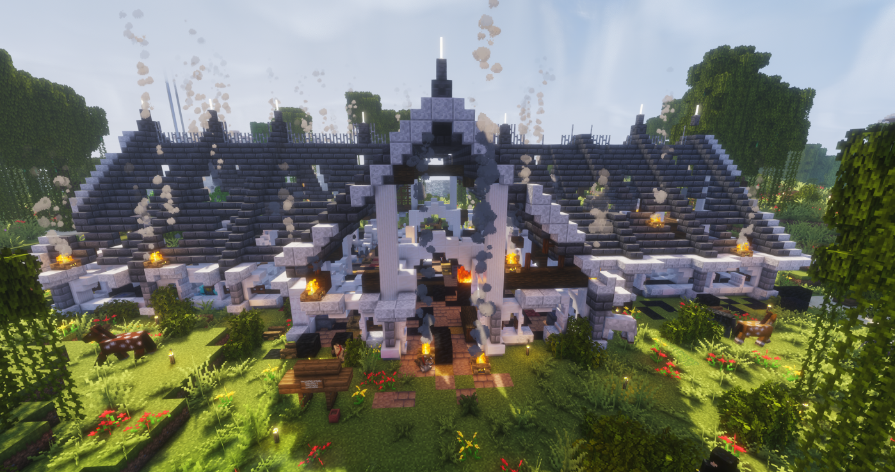
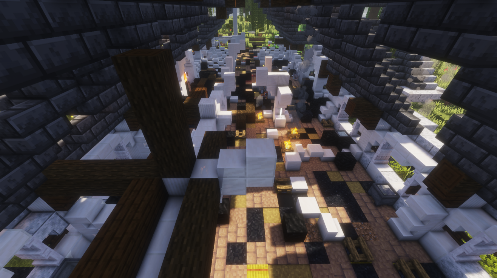

Incendie aux écuries Belazur & épidémie : Karminéa face à l'épreuve
Le feu, la maladie, et la mort. En l'espace de quelques jours, Karminéa a été frappée de plein fouet. Mais face à l'adversité, ses habitants ont répondu présents — avec courage, solidarité, et dévouement.

Les écuries Belazur au cœur de l'incendie — les flammes et la fumée ont envahi le ranch dans la nuit.
Il y avait quelque chose d'inhabituel dans l'air ces derniers jours à Karminéa. D'abord les flammes, puis la fièvre. Une semaine noire qui a mis la communauté à rude épreuve — et révélé, une fois de plus, ce dont elle est capable quand elle se serre les coudes.
🐦 Un perroquet donne l'alerte
C'est un volatile peu ordinaire qui a sauvé les écuries Belazur d'une destruction totale. Dans la nuit, alors que les flammes commençaient à dévorer le ranch, le perroquet des lieux a donné l'alarme — permettant à une équipe de choc de se mobiliser en urgence.
Vince, Paul, Kévin, Monte-Carlo et Julien ont répondu présents sans hésitation. Bravant le feu, ils ont combattu les flammes jusqu'à ce que le ranch soit hors de danger. Grâce à leur sang-froid et leur bravoure, les écuries Belazur sont toujours debout.
Le Karmine Déchaîné salue chacun d'eux. Karminéa peut être fière de ses habitants.

C'est avec une immense tristesse que le Karmine Déchaîné apprend le décès de Quentin, survenu lors de cet incendie tragique.
Le journal adresse ses plus sincères condoléances à sa famille et à ses proches.
Tu nous manqueras. Repose en paix.
Alors que l'incendie venait à peine d'être maîtrisé, une épidémie foudroyante s'est abattue sur Karminéa. Des dizaines d'habitants sont tombés malades — certains à plusieurs reprises. Grâce au dévouement exceptionnel du corps médical, la situation a pu être calmée hier. Gardes enchaînées, soins inlassables, vies sauvées une à une.
Le Karmine Déchaîné s'incline devant eux. Karminéa ne vous oubliera pas.